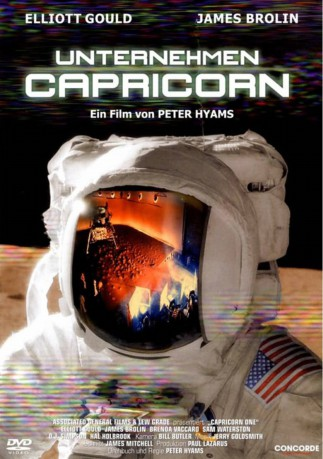
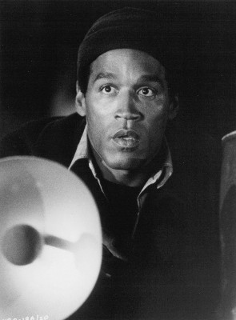
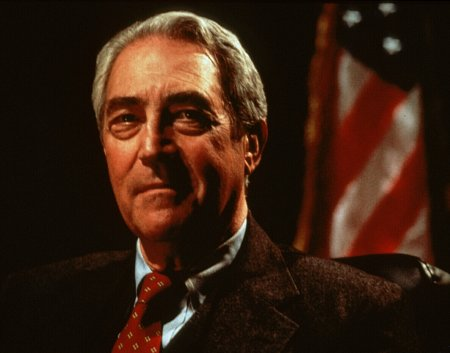
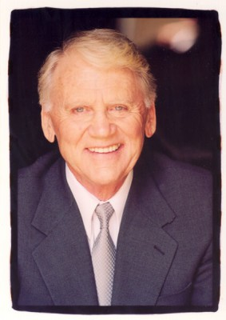

#5518 Unternehmen Capricorn
Alternativ: Capricorn One
 
 IMDB-Wertung: 6.8 / 10
IMDB-Wertung: 6.8 / 10  Metascore: 0
Metascore: 0 
Science-Fiction-Thriller aus dem Jahr 1978. Unternehmen Capricorn soll die erste bemannte Mars-Mission werden. Doch kurz vor dem Start werden die drei Astronauten aus dem Schiff geholt. Es stellt sich heraus, dass die Mission nur vorgetäuscht werden soll, um der NASA nicht finanzielle Schwierigkeiten zu machen und ihr Ansehen zu wahren. Mit Elliott Gould und James Brolin.
Jahr: 1977
Dauer: 123 Minuten
FSK: 12
Land: USA Studio: Warner Bros.Tonspuren: DD2.0 - ,
Untertitel: Englisch,
Auflösung: 1080p (1920x816) Größe: 8304 MB
Genre: Action, Thriller
Regisseur: Peter Hyams
Drehbuch: Rémy Belvaux
Soundtrack:
Darsteller:
 Elliott Gould als Robert Caulfield
Elliott Gould als Robert Caulfield James Brolin als Charles Brubaker
James Brolin als Charles Brubaker Brenda Vaccaro als Kay Brubaker
Brenda Vaccaro als Kay Brubaker Sam Waterston als Peter Willis
Sam Waterston als Peter Willis-  O.J. Simpson als John Walker
 Hal Holbrook als Dr. James Kelloway
Hal Holbrook als Dr. James Kelloway Karen Black als Judy Drinkwater
Karen Black als Judy Drinkwater Telly Savalas als Albain
Telly Savalas als Albain David Huddleston als Hollis Peaker
David Huddleston als Hollis Peaker- David Doyle als Walter Loughlin
 Lee Bryant als Sharon Willis
Lee Bryant als Sharon Willis- Denise Nicholas als Betty Walker
- Robert Walden als Elliot Whitter
 James Sikking als Control Room Man
James Sikking als Control Room Man Alan Fudge als Capsule Communicator
Alan Fudge als Capsule Communicator-  James Karen als Vice President Price
- Nancy Malone als Mrs. Peaker
- Norman Bartold als President
 Paul Picerni als Jerry
Paul Picerni als Jerry- Barbara Bosson als Alva Leacock
-  Jon Cedar als F.B.I. Man Number 1
- Frank Farmer als Policeman
- Virginia Kaiser als Mrs. Price
- Hank Stohl als General Enders
 Darrell Zwerling als Dr. Bergen
Darrell Zwerling als Dr. Bergen- Milton Selzer als Dr. Burroughs
- Lou Frizzell als Horace Gruning
- Chris Hyams als Charles Brubaker, Jr.
- Seanna Marre als Sandy Brubaker
- Paul Haney als Paul Cunningham
- Steve Tannen als Man at Hangar Number 1
- Trent Dolan als Man at Hangar Number 2
- Todd Hoffman als N.A.S.A. Usher
- Marty Anka als Bartender
- Kenneth White als Tracking Technician
- John Hiscock als Reporter Number 1
- Bridget Byrne als Reporter Number 2
- Colin Dangaard als Reporter Number 3
- James Bacon als Reporter Number 4
- Sandy Davidson als N.A.S.A. Reporter
 Ron Cummins als F.B.I. Man Number 2
Ron Cummins als F.B.I. Man Number 2- Dennis O'Flaherty als F.B.I. Man Number 3
- Zack Taylor als F.B.I. Man Number 4
- Monty Jordan als Army Helicopter Pilot , uncredited
- Arthur Tovey als Minor Role , uncredited
Datei: X:\1977\Unternehmen Capricorn (1977, FSK12, 1920x816).mkv seit 13.02.2017
Festplatte: HD 1971-1979
 Es gibt insgesamt 33 Filme in der Gruppe '1977'
Es gibt insgesamt 33 Filme in der Gruppe '1977'